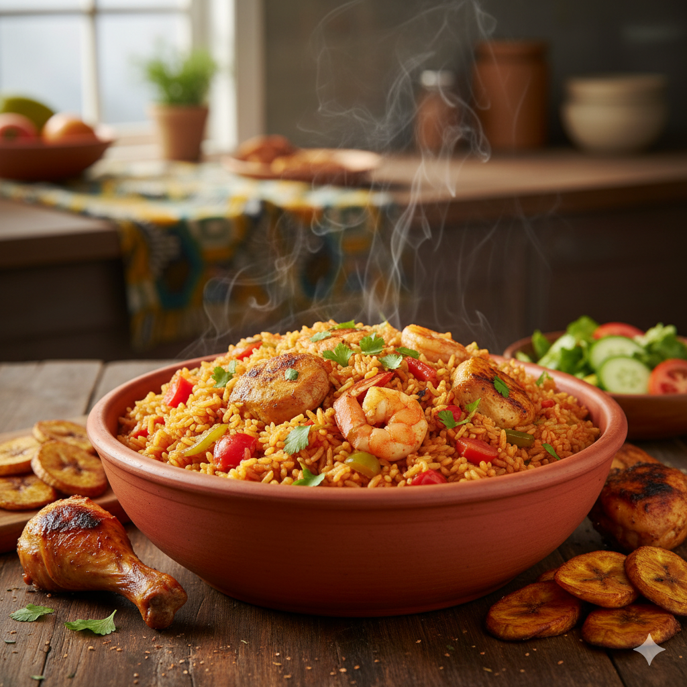

Home
Jollof Recipes

Jollof Rice
Jollof rice is a classic West African rice dish, known for its vibrant red or orange hue and delicious savory flavor.
It's often served at celebrations and gatherings, with variations found across different West African countries, each claiming their version is the best!
The key to a great jollof is the rich tomato-based sauce, slow-cooked with aromatic spices, which infuses every grain of rice with incredible flavor.
It's often accompanied by various proteins like chicken, beef, or fish, and sometimes plantains.
ingredients
- 2 cups long-grain rice
- 1 large onion, chopped
- 4-6 ripe plum tomatoes, blended
- 4-6 ripe plum tomatoes, blended
- 1 red bell pepper, blended
- 2 Scotch bonnet peppers (or to taste), blended (optional)
- 1/2 cup tomato paste
- 1/4 cup vegetable oil
- 2 cups chicken or vegetable broth
- 2 bay leaves
- 1 tsp curry powder
- 1/2 tsp dried thyme
- Salt to taste
- Black pepper to taste
- (Optional) Chicken, beef, or fish for serving
Steps
- Prepare the Blended Mix: Blend the fresh tomatoes, red bell pepper, and Scotch bonnet peppers (if using) until smooth. Set aside.
- Sauté Aromatics: Heat vegetable oil in a large pot or Dutch oven over medium heat. Add the chopped onion and sauté until translucent, about 5-7 minutes.
- Cook Tomato Paste: Add the tomato paste to the pot and fry for 5-7 minutes, stirring constantly, until it darkens and loses its raw taste. This step is crucial for depth of flavor.
- Add Blended Mix: Pour in the blended tomato-pepper mixture. Add bay leaves, curry powder, dried thyme, salt, and black pepper. Stir well and bring to a simmer.
- Simmer the Sauce: Reduce heat to low, cover, and let the sauce simmer for 15-20 minutes, allowing the flavors to meld. Stir occasionally to prevent burning.
- Add Rice: Rinse the rice thoroughly until the water runs clear. Add the rinsed rice to the simmering sauce and stir gently to combine, ensuring every grain is coated with the sauce.
- Add Broth: Pour in the chicken or vegetable broth. Stir once, then cover the pot tightly.
- Cook the Rice: Reduce heat to very low and cook for 20-30 minutes, or until the liquid has been absorbed and the rice is tender. Do not stir too much during this stage to allow the rice to steam properly. If the rice is still hard, you can add a little more water or broth and continue cooking.
- Rest and Serve: Once cooked, turn off the heat and let the jollof rice sit, covered, for another 5-10 minutes. Fluff with a fork before serving. Serve hot with your choice of protein and a side of plantains or salad.